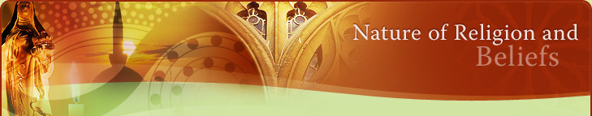

Content Description
All
knowledge and understanding
The Dreaming is a term used to describe a central concept, which underpins all beliefs and practices in Aboriginal communities. The Dreaming represents all knowledge and understanding in Aboriginal societies and determines all relationships and responsibilities for Aboriginal people. However, it is difficult to accurately describe this concept because there are over nine hundred language groups across Australia and no two-language groups are entirely identical in belief. However, significant commonalities exist between groups especially those, which are geographically close to each other
Origins of the universe
The Dreaming includes explanations of the origins of the universe, that is, how the world came into being through the actions of their ancestral spirit beings, the creation of the physical world and the animals and plants, which inhabit this world. The Dreaming, however, is not regarded as myth by the Aboriginal people. The Dreaming is a metatemporal concept, which incorporates the past, present and future reality as a complete and present reality.
Sacred sites
The Dreaming is inextricably connected to the land, as the land is the physical medium through which the Dreaming is lived and communicated. Whilst all land is important to all Aboriginal people, particular sites, known as sacred sites, have a special significance for particular Aboriginal groups as they are connected with different events in the Dreaming. Thus, particular groups of Aboriginal people have special responsibilities to care for and to learn from these sites, for example by carrying out prescribed rituals such as balance rites.
Telling and learning Dreaming is life long process
For Aboriginal communities the telling and learning of the Dreaming stories is a life long process. This process is revealed through many aspects of Aboriginal societies such as kinship, song, dance, art, ritual, and story. Symbolism in art, for example, explains the creation of the natural world and the laws, which stem from this. This is an important way of teaching Aboriginal children about right and wrong behaviour in society. However, symbolism in art cannot be taken at face value for Aboriginal art is esoteric, and has multiple layers of meaning.